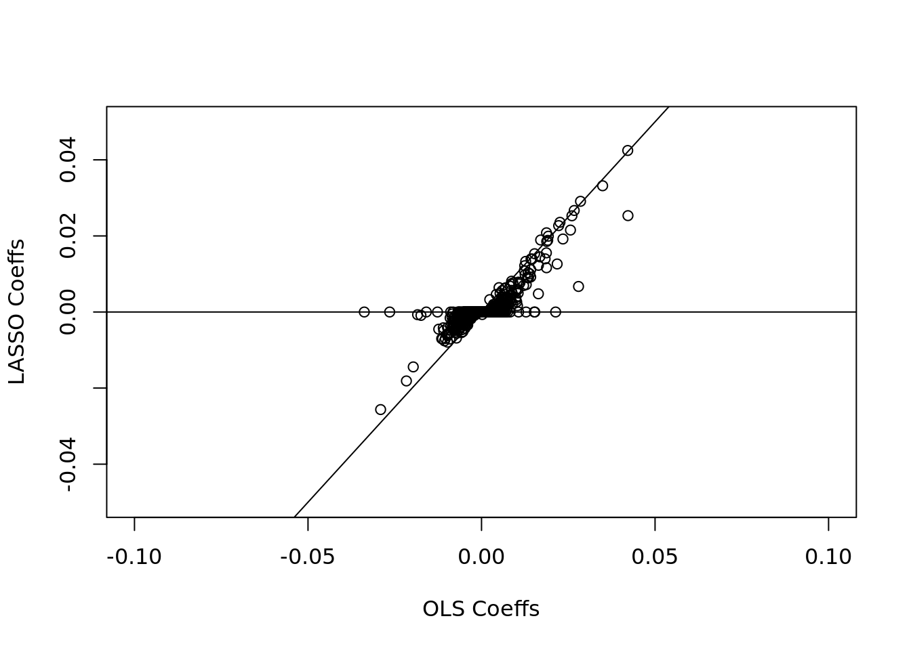
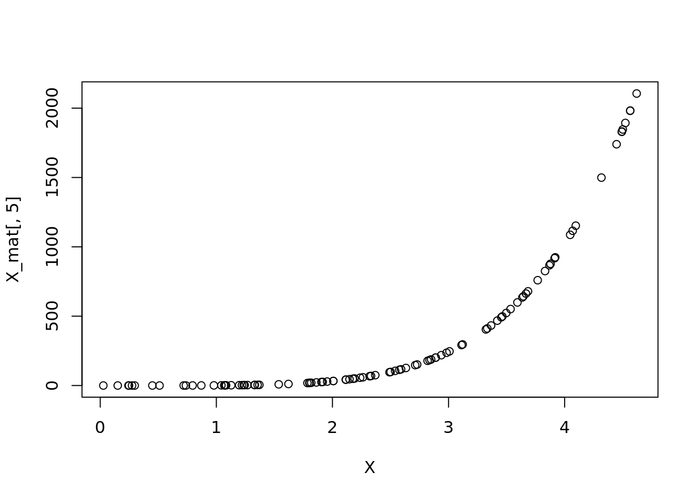
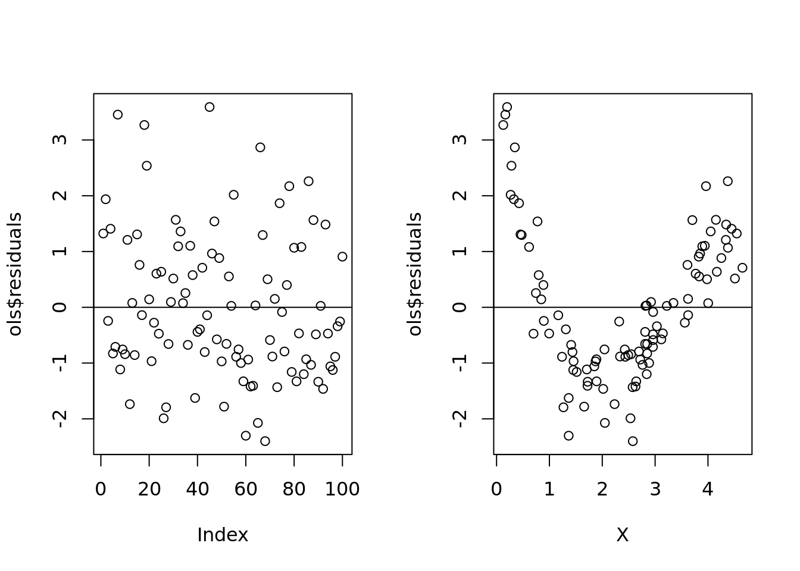

Chapter 3 Linear Regresssion
library(tidyverse)## ── Attaching packages ─────────────────────────────────────── tidyverse 1.3.0 ──## ✓ ggplot2 3.3.3 ✓ purrr 0.3.4
## ✓ tibble 3.0.6 ✓ dplyr 1.0.4
## ✓ tidyr 1.1.2 ✓ stringr 1.4.0
## ✓ readr 1.4.0 ✓ forcats 0.5.1## ── Conflicts ────────────────────────────────────────── tidyverse_conflicts() ──
## x dplyr::filter() masks stats::filter()
## x dplyr::lag() masks stats::lag()We have a sample of 100, 5 different variables (p), and an X matrix. We are making uniform variables, and we will jam them into a matrix such that the number of rows is equal to n.
n <- 100
p <- 5
X <- matrix(runif(p * n),
nrow=n)Then we can create some Y’s based on betas and noise. To do so, we need betas. We will make all of them zeros, except for one of them! We also need to define our noise.
beta <- rep(0, p)
beta[sample(p, 1)] <- 1
noise <- rnorm(n)
# %*% Matrix multiplication in R
#X is a matrix of 100 by 5
#Beta is a matrix of 5
Y <- X %*% beta + noiseThe above is generating data according to a linear model! So what does this do? We have X and a bunch of 0 betas, except for one special one. The Y then will depend only on the one column!
If we don’t know which beta matters, we just fit y against x and print out a summary.
ols <- lm(Y ~ X)
summary(ols)##
## Call:
## lm(formula = Y ~ X)
##
## Residuals:
## Min 1Q Median 3Q Max
## -1.98594 -0.67326 0.05564 0.64407 2.06935
##
## Coefficients:
## Estimate Std. Error t value Pr(>|t|)
## (Intercept) -0.03983 0.38385 -0.104 0.91758
## X1 1.07992 0.32427 3.330 0.00124 **
## X2 -0.29117 0.32254 -0.903 0.36896
## X3 0.52511 0.31626 1.660 0.10017
## X4 -0.22179 0.31998 -0.693 0.48993
## X5 0.26733 0.30940 0.864 0.38976
## ---
## Signif. codes: 0 '***' 0.001 '**' 0.01 '*' 0.05 '.' 0.1 ' ' 1
##
## Residual standard error: 0.8905 on 94 degrees of freedom
## Multiple R-squared: 0.1551, Adjusted R-squared: 0.1101
## F-statistic: 3.45 on 5 and 94 DF, p-value: 0.006602So only one of them is statistically significant! This shows it should be the 5th! We can see the truth:
beta## [1] 1 0 0 0 0This is a good example of fitting basic regression.
Lets look at the y and subtract the the coefficients to find the residuals: note: length(ols$coefficients) is 6, but dimensions of X is going to be 5.So we will need to cbind. So this is y minus the fitted data from the regression. When we do summary of ols, we get a bunch of estimates. The intercept and the estimated coefficients. These are estimates from the regression based on the data. Using these, we can recover and estimate and then find the difference to see what the residuals are!
resid <- Y - cbind(1, X) %*% ols$coefficients
#this is the manual version of:
resid <- ols$residualsNow let’s do the residuals against the true beta! We are subtracting the x values against the true beta. True beta means this is the beta that created the data. This is how god created the world. It is the actual physical value. The above residuals are from the regression of the fitted data.
resid_from_truth <- Y - X %*% betaWe can plot this as well!
plot(density(resid_from_truth))
lines(density(resid), col = "red")
abline(v = 0)This might not be enough contrast for us to tell. How can we quantify the difference? Let’s see the difference between the two:
mean(abs(resid))## [1] 0.7062042mean(abs(resid_from_truth))## [1] 0.744579We want the smaller value! The simulated data based values will always have a smaller residual mean than the real values! This is rather disturbing. The fitted coefficients from your regression will always be better than the “true” coefficients. Why is this bad?
Normally we want to use regression to find the natural coefficients or natural facts about the world. These are based on some “truth”. If you can collect noisy data but our algo prefers the fitted data rather than the truth we have a problem. We want our error minimized at the “truth”. Our regression here doesn’t like the true answer and it prefers something else. It actually prefers the training data.
This is because we use the same data to train and evaluate. Our data is just optimized for this one thing. If we know how you are going to evaluate me, I will just optimize for that specific thing.
So let’s generate another set of data: new Y using the same beta and x but with new noise values: Testing data generated from the same population but not used for training the model
new_noise <- rnorm(n)
new_Y <- X %*% beta + new_noise
new_resid <- new_Y - cbind(1, X) %*% ols$coefficients
new_resid_from_truth <- new_Y - X %*% beta
mean(abs(new_resid))## [1] 0.8249776mean(abs(new_resid_from_truth))## [1] 0.7946041Our takeaway is don’t always cross over your data because you risk overfitting.
3.1 Non linear data
Let’s create new data that is nonlinear. This is mini sine data.
n <- 100
X <- runif(100, max = 2 * pi / 4 * 3)
Y <- 0.1+-3 * sin(X) + rnorm(n, sd = 0.5)Then we can recreate our linear regression and the plot.
ols <- lm(Y ~ X)
summary(ols)##
## Call:
## lm(formula = Y ~ X)
##
## Residuals:
## Min 1Q Median 3Q Max
## -2.7254 -0.9476 -0.3520 1.1400 2.9925
##
## Coefficients:
## Estimate Std. Error t value Pr(>|t|)
## (Intercept) -2.9718 0.2590 -11.472 < 2e-16 ***
## X 0.9877 0.1039 9.509 1.41e-15 ***
## ---
## Signif. codes: 0 '***' 0.001 '**' 0.01 '*' 0.05 '.' 0.1 ' ' 1
##
## Residual standard error: 1.33 on 98 degrees of freedom
## Multiple R-squared: 0.4799, Adjusted R-squared: 0.4746
## F-statistic: 90.43 on 1 and 98 DF, p-value: 1.405e-15plot(X, Y)
abline(lm(Y ~ X))As expected our linear model created a line that doesn’t look to fit too well. Let’s look at the residual plot instead. We
par(mfrow=c(1,2))
plot(ols$residuals)
abline(h=0)
plot(X, ols$residuals)
abline(h = 0)
Xs were generated in a random order so we we just use the index, it looks random and normal. But when we sort by x value, we see that there is definitely a problem and we need to add a quadratic term.
We can then find the mean squared error:
n <- 100
Y <- 0.1+-3 * sin(X) + rnorm(n, sd = 0.5)
#Y - y hat squared
mean((Y - ols$fitted.values) ^ 2)## [1] 1.812336Plot the MSE vs the number of polynomials used on the x axis. Do this for both the training vs the testing data.
We can regress on matrices in R which makes this really easy. So let us create an X_matrix, where for each degree, we raise x to that number of degrees. This matrix will be n rows and degrees columns.
n <- 100
degrees <- 1:50
X <- runif(n, max = 2 * pi / 4 * 3)
Y <- 0.1+-3 * sin(X) + rnorm(n, sd = 0.5)
new_Y <- 0.1+-3 * sin(X) + rnorm(n, sd = 0.5)
X_mat <- sapply(degrees, function(i)
X ^ i)For example
plot(X, X_mat[,5])
We can do this through a loop.
#create an empty vector
MSEs <- rep(NA, length(degrees))
#Create empty vector for tests
test_MSEs <- MSEs
for (i in seq_along(degrees)) {
# regress for each power on each loop
ols <- lm(Y ~ X_mat[, 1:i])
# record the MSEs
MSEs[i] <- mean(ols$residuals ^ 2)
# do again for new set, only word because we use the same X
new_errors <- new_Y - ols$fitted.values
# record
test_MSEs[i] <- mean(new_errors ^ 2)
}Plot in base R
plot(degrees, MSEs, type = "b",
ylim = c(0, max(test_MSEs)))
lines(degrees, test_MSEs, type = "b", col = "red")
legend("topright",
legend = c("Test", "Train"),
fill = c("red", "black"))
Plot in tidyverse
summary(ols)##
## Call:
## lm(formula = Y ~ X_mat[, 1:i])
##
## Residuals:
## Min 1Q Median 3Q Max
## -1.19658 -0.38102 0.03311 0.28621 1.15494
##
## Coefficients: (28 not defined because of singularities)
## Estimate Std. Error t value Pr(>|t|)
## (Intercept) -2.356e+00 3.663e+00 -0.643 0.522
## X_mat[, 1:i]1 1.693e+02 1.978e+02 0.856 0.395
## X_mat[, 1:i]2 -2.741e+03 2.872e+03 -0.954 0.343
## X_mat[, 1:i]3 1.988e+04 1.975e+04 1.007 0.317
## X_mat[, 1:i]4 -8.187e+04 7.825e+04 -1.046 0.299
## X_mat[, 1:i]5 2.131e+05 1.976e+05 1.079 0.284
## X_mat[, 1:i]6 -3.734e+05 3.373e+05 -1.107 0.272
## X_mat[, 1:i]7 4.564e+05 4.034e+05 1.132 0.261
## X_mat[, 1:i]8 -3.966e+05 3.439e+05 -1.153 0.252
## X_mat[, 1:i]9 2.452e+05 2.091e+05 1.173 0.244
## X_mat[, 1:i]10 -1.057e+05 8.879e+04 -1.190 0.238
## X_mat[, 1:i]11 2.979e+04 2.472e+04 1.205 0.232
## X_mat[, 1:i]12 -4.504e+03 3.696e+03 -1.219 0.227
## X_mat[, 1:i]13 NA NA NA NA
## X_mat[, 1:i]14 9.917e+01 7.997e+01 1.240 0.219
## X_mat[, 1:i]15 NA NA NA NA
## X_mat[, 1:i]16 -3.438e+00 2.740e+00 -1.255 0.213
## X_mat[, 1:i]17 NA NA NA NA
## X_mat[, 1:i]18 9.420e-02 7.450e-02 1.264 0.210
## X_mat[, 1:i]19 NA NA NA NA
## X_mat[, 1:i]20 NA NA NA NA
## X_mat[, 1:i]21 -4.239e-04 3.340e-04 -1.269 0.208
## X_mat[, 1:i]22 NA NA NA NA
## X_mat[, 1:i]23 NA NA NA NA
## X_mat[, 1:i]24 2.308e-06 1.825e-06 1.265 0.210
## X_mat[, 1:i]25 NA NA NA NA
## X_mat[, 1:i]26 NA NA NA NA
## X_mat[, 1:i]27 -9.535e-09 7.613e-09 -1.252 0.214
## X_mat[, 1:i]28 NA NA NA NA
## X_mat[, 1:i]29 NA NA NA NA
## X_mat[, 1:i]30 NA NA NA NA
## X_mat[, 1:i]31 4.865e-12 3.965e-12 1.227 0.224
## X_mat[, 1:i]32 NA NA NA NA
## X_mat[, 1:i]33 NA NA NA NA
## X_mat[, 1:i]34 NA NA NA NA
## X_mat[, 1:i]35 NA NA NA NA
## X_mat[, 1:i]36 -3.924e-16 3.315e-16 -1.184 0.240
## X_mat[, 1:i]37 NA NA NA NA
## X_mat[, 1:i]38 NA NA NA NA
## X_mat[, 1:i]39 NA NA NA NA
## X_mat[, 1:i]40 NA NA NA NA
## X_mat[, 1:i]41 NA NA NA NA
## X_mat[, 1:i]42 5.047e-21 4.505e-21 1.120 0.266
## X_mat[, 1:i]43 NA NA NA NA
## X_mat[, 1:i]44 NA NA NA NA
## X_mat[, 1:i]45 NA NA NA NA
## X_mat[, 1:i]46 NA NA NA NA
## X_mat[, 1:i]47 NA NA NA NA
## X_mat[, 1:i]48 -4.413e-26 4.209e-26 -1.049 0.298
## X_mat[, 1:i]49 NA NA NA NA
## X_mat[, 1:i]50 NA NA NA NA
##
## Residual standard error: 0.5185 on 77 degrees of freedom
## Multiple R-squared: 0.9546, Adjusted R-squared: 0.9416
## F-statistic: 73.51 on 22 and 77 DF, p-value: < 2.2e-16This should be really concerning. It would mean strong colinearity. R is doing us a favor and automatically dropping some redundant features.
Create data under the so called regression model. Regression is an algo, but it is also a model for creating data. ODS is a least square algoristhm.
n <- 100
p <- 5
# God knows this!
params <- runif(p, -10, 10)
features <- matrix(rnorm(n * p),
nrow=n, ncol=p)
X <- features
X1 <- matrix(rnorm(n * p),
nrow=n, ncol=p)
noise <- rnorm(n)
noise1 <- rnorm(n)
Y1 <- X %*% params + noise
Y2 <- 0
for(i in seq_len(p)){
Y2 <- Y2 + params[i] * X1[, i]
}
Y2 <- Y2 + noise1
plot(X[,1], Y1)
points(X1[, 1], Y2, col="red")df <- as.data.frame(cbind(Y,X))
dim(df)## [1] 100 6head(df,2)## Y V2 V3 V4 V5 V6
## 1 -3.99537 -0.4858853 -0.5873763 -0.7844641 -2.7058657 1.205373
## 2 -3.48547 0.3690574 -0.4735389 1.0506131 0.1672846 -0.557476names(df) <- c("Y", paste0("X", 1:p))
ols <- lm(Y ~ ., df)
summary(ols)##
## Call:
## lm(formula = Y ~ ., data = df)
##
## Residuals:
## Min 1Q Median 3Q Max
## -3.8526 -1.4350 -0.5161 1.5859 4.6446
##
## Coefficients:
## Estimate Std. Error t value Pr(>|t|)
## (Intercept) -0.5234 0.2192 -2.388 0.0189 *
## X1 0.1570 0.2147 0.731 0.4665
## X2 -0.3258 0.2052 -1.588 0.1158
## X3 -0.1442 0.2028 -0.711 0.4789
## X4 0.4843 0.2039 2.376 0.0195 *
## X5 -0.3564 0.2214 -1.610 0.1108
## ---
## Signif. codes: 0 '***' 0.001 '**' 0.01 '*' 0.05 '.' 0.1 ' ' 1
##
## Residual standard error: 2.095 on 94 degrees of freedom
## Multiple R-squared: 0.09452, Adjusted R-squared: 0.04635
## F-statistic: 1.962 on 5 and 94 DF, p-value: 0.09139class(ols)## [1] "lm"predict(ols)## 1 2 3 4 5 6
## -2.03523648 -0.18294221 -1.46358980 -1.65085658 -1.04029745 -0.77761486
## 7 8 9 10 11 12
## -0.78792248 -0.07398802 0.30804699 0.24291643 -1.33488427 -0.01642422
## 13 14 15 16 17 18
## -0.93915160 -0.15066757 -0.94359918 0.89266782 -1.61379010 -0.66984388
## 19 20 21 22 23 24
## -0.43120650 -0.75901154 -0.36441423 -1.24636740 -0.06481710 -1.71616739
## 25 26 27 28 29 30
## 0.10885537 -0.61796643 -1.29099775 0.57069354 -0.56359134 -0.78449874
## 31 32 33 34 35 36
## 0.80963416 0.35523045 0.04525086 -0.61684416 -1.76282557 -0.44688237
## 37 38 39 40 41 42
## -0.75519923 -0.57303324 -0.41658712 -1.32172155 -0.84848116 -0.75512042
## 43 44 45 46 47 48
## 0.20223711 -0.18266803 -0.24114676 -0.47844964 0.30403804 -1.26595079
## 49 50 51 52 53 54
## -0.29308310 -1.13981635 -0.50192225 -1.11516277 -0.95169952 -1.31653325
## 55 56 57 58 59 60
## -0.06256561 -0.39958896 -0.69367261 -0.70071502 -0.76898893 -0.91084578
## 61 62 63 64 65 66
## -1.55280287 -0.55185651 0.39845490 0.14976143 -0.38076391 -0.43235326
## 67 68 69 70 71 72
## -1.26707178 -0.24272956 -0.43306373 -1.74545866 -0.34235903 -1.19119903
## 73 74 75 76 77 78
## -0.35608283 0.08757120 -0.12821228 -0.43874868 0.41933537 -0.41046665
## 79 80 81 82 83 84
## -1.10557050 -0.87477843 -0.94850634 -0.87814556 -1.42022057 -0.26339642
## 85 86 87 88 89 90
## -1.65267708 0.05355826 0.02671337 -2.62196068 -0.34564823 0.53312529
## 91 92 93 94 95 96
## -0.50079887 -1.28935509 -2.03348658 -0.66589458 -0.54966533 -0.39267202
## 97 98 99 100
## -0.79074612 -0.68465754 -0.32901811 -1.29527017#if you pass in a lm or glm, predict will use predict.lm or predict.glm anyways. It is smart.
#There is an argument in predict that uses "new data". You need to pass in what the new data is. It should be tempting for us to just pass in X1.
#This shouldn't work! But why?
#predict(ols, newdata = as.data.frame(X1))
#convert to df
#now there is an error that we don't know what X2 is. The data frame you are passing it needs to have the same names that you are training on.
names(df)## [1] "Y" "X1" "X2" "X3" "X4" "X5"df1 <- as.data.frame(X1)
names(df1) <- names(df)[-1]
test_preds <- predict(
ols,
newdata = df1)
#The data you are passing, you need the data to look identical to the data you trained the model with. The names of the data frames must agree.
#classic workflow
plot(test_preds , Y2)test_errors <- Y2 - test_preds
test_rmse <- sqrt(mean(test_errors ^ 2))
test_rmse## [1] 12.7242sd(noise)## [1] 1.011156sd(noise1)## [1] 1.054824#You cannot reduce beyond this. R will automatically throw out extremely high colinearity instances. In the real world this would be rare. This is unique to R.
names(ols)## [1] "coefficients" "residuals" "effects" "rank"
## [5] "fitted.values" "assign" "qr" "df.residual"
## [9] "xlevels" "call" "terms" "model"#probably the most important
ols$coefficients## (Intercept) X1 X2 X3 X4 X5
## -0.5233605 0.1569933 -0.3257545 -0.1441812 0.4842982 -0.3563999plot(ols$coefficients, c(0,params))
abline(a = 0, b=1)train_features <- cbind(1,as.matrix(df[,-1])) #take out y column
#fitted_vals <- train_features %*%
fitted_vals <- train_features %*% ols$coefficients
sum(abs(fitted_vals - ols$fitted.values))## [1] 4.735101e-14res <- df$Y - ols$fitted.values
sum(abs(res - ols$residuals))## [1] 8.881784e-16plot(ols$residuals)
abline(h = 0)
#you can also put plot onto the regression function itself
plot(ols)
#residuals vs fitted values. This is what we saw earlier but much fancier
#QQ Plot
#scale location not that important
#leverage to look for outliers3.1.0.1 Traps
df_missing <- df
df_missing[20, "Y"] <- NA #purposeffully lose the value
ols <- lm(Y ~., df_missing)
length(ols$residuals)## [1] 99#lm drops missing value before matrix multiplication. So the residuals will change. 3.1.1 Interactions + subtracting variables
3.1.1.1 Another trap
ols <- lm(Y ~ X1 + X2 + X2*X3, df)
ols <- lm(Y ~ X1 + X2 + X2:X3, df)
summary(ols)##
## Call:
## lm(formula = Y ~ X1 + X2 + X2:X3, data = df)
##
## Residuals:
## Min 1Q Median 3Q Max
## -3.6660 -1.6766 -0.4909 1.6007 4.9059
##
## Coefficients:
## Estimate Std. Error t value Pr(>|t|)
## (Intercept) -0.6166 0.2156 -2.860 0.0052 **
## X1 0.1228 0.2212 0.555 0.5802
## X2 -0.1646 0.2168 -0.759 0.4495
## X2:X3 0.1777 0.2056 0.864 0.3897
## ---
## Signif. codes: 0 '***' 0.001 '**' 0.01 '*' 0.05 '.' 0.1 ' ' 1
##
## Residual standard error: 2.155 on 96 degrees of freedom
## Multiple R-squared: 0.0218, Adjusted R-squared: -0.00877
## F-statistic: 0.7131 on 3 and 96 DF, p-value: 0.5465test_preds <- predict(ols, df1)
head(df1,2)## X1 X2 X3 X4 X5
## 1 -1.9378190 1.2128464 -0.4286954 0.8357413 0.5587248
## 2 -0.2943809 0.9672296 1.0417259 -0.8419097 -0.3193651#when you start manipulating the data inbetween then you get the problems
#If you do feature engineering for test, then ADD SOMETHINGols <- lm(Y ~ . - X4, df)
summary(ols)##
## Call:
## lm(formula = Y ~ . - X4, data = df)
##
## Residuals:
## Min 1Q Median 3Q Max
## -3.4297 -1.6169 -0.4508 1.4788 4.6394
##
## Coefficients:
## Estimate Std. Error t value Pr(>|t|)
## (Intercept) -0.58889 0.22268 -2.645 0.00957 **
## X1 0.16316 0.21990 0.742 0.45993
## X2 -0.23767 0.20670 -1.150 0.25308
## X3 -0.07868 0.20577 -0.382 0.70303
## X5 -0.35892 0.22676 -1.583 0.11678
## ---
## Signif. codes: 0 '***' 0.001 '**' 0.01 '*' 0.05 '.' 0.1 ' ' 1
##
## Residual standard error: 2.145 on 95 degrees of freedom
## Multiple R-squared: 0.04015, Adjusted R-squared: -0.0002612
## F-statistic: 0.9935 on 4 and 95 DF, p-value: 0.415#get rid of intercept
ols <- lm(Y ~ . -1, df)
summary(ols)##
## Call:
## lm(formula = Y ~ . - 1, data = df)
##
## Residuals:
## Min 1Q Median 3Q Max
## -4.6406 -1.8902 -0.9127 1.1197 4.1611
##
## Coefficients:
## Estimate Std. Error t value Pr(>|t|)
## X1 0.17062 0.21990 0.776 0.43973
## X2 -0.35453 0.20985 -1.689 0.09442 .
## X3 -0.04459 0.20332 -0.219 0.82686
## X4 0.54556 0.20719 2.633 0.00987 **
## X5 -0.41891 0.22524 -1.860 0.06600 .
## ---
## Signif. codes: 0 '***' 0.001 '**' 0.01 '*' 0.05 '.' 0.1 ' ' 1
##
## Residual standard error: 2.146 on 95 degrees of freedom
## Multiple R-squared: 0.1158, Adjusted R-squared: 0.06923
## F-statistic: 2.488 on 5 and 95 DF, p-value: 0.03662INSERT STUFF ABOUT INTERACTION TERMS: COLON THING
3.2 Last trap, ording of the data
x <- runif(n, -2 ,2)
y <- x^2 * 3
ols <- lm(y~x)
summary(ols)##
## Call:
## lm(formula = y ~ x)
##
## Residuals:
## Min 1Q Median 3Q Max
## -4.3739 -3.3211 -0.4189 3.2166 8.0077
##
## Coefficients:
## Estimate Std. Error t value Pr(>|t|)
## (Intercept) 4.3648 0.3671 11.889 <2e-16 ***
## x 0.4014 0.3030 1.325 0.188
## ---
## Signif. codes: 0 '***' 0.001 '**' 0.01 '*' 0.05 '.' 0.1 ' ' 1
##
## Residual standard error: 3.659 on 98 degrees of freedom
## Multiple R-squared: 0.0176, Adjusted R-squared: 0.007573
## F-statistic: 1.755 on 1 and 98 DF, p-value: 0.1883predict(ols, data.frame(x = runif(n,-2,2)))## 1 2 3 4 5 6 7 8
## 5.106049 4.842574 3.937752 4.206981 4.902509 3.677574 4.939795 4.136371
## 9 10 11 12 13 14 15 16
## 4.369066 3.935517 4.027980 4.388961 5.115381 3.719298 3.580939 3.699432
## 17 18 19 20 21 22 23 24
## 3.738683 4.336000 4.618249 5.047126 4.431023 3.601594 4.078987 4.145642
## 25 26 27 28 29 30 31 32
## 3.864399 3.775180 4.760625 4.530870 5.075906 4.131424 4.320244 4.673412
## 33 34 35 36 37 38 39 40
## 3.814423 4.582483 4.795278 3.964230 4.164369 4.544594 4.756879 3.921163
## 41 42 43 44 45 46 47 48
## 4.237075 3.779582 4.550385 4.951418 4.433857 4.274919 4.124860 3.937461
## 49 50 51 52 53 54 55 56
## 4.883550 3.940454 5.145065 4.054113 3.969304 4.313458 4.276917 4.280787
## 57 58 59 60 61 62 63 64
## 5.132945 5.042830 3.822147 4.115994 4.184052 4.724140 3.764775 4.893813
## 65 66 67 68 69 70 71 72
## 5.006856 3.981253 3.668645 3.772675 4.518990 4.805206 3.836124 5.112823
## 73 74 75 76 77 78 79 80
## 5.076476 3.682843 4.083817 4.747796 3.846645 4.482560 4.993103 4.529510
## 81 82 83 84 85 86 87 88
## 4.463361 4.784376 4.160317 4.660654 4.971043 4.215374 4.679877 4.114744
## 89 90 91 92 93 94 95 96
## 3.845933 4.873646 4.129768 4.383853 4.881578 5.046319 3.942813 4.834986
## 97 98 99 100
## 4.768836 5.165950 4.722129 4.202319predict(ols, data.frame(x = runif(n, -2,2)))## 1 2 3 4 5 6 7 8
## 4.024704 4.942866 4.953035 4.459428 4.304575 5.134069 4.556407 3.842406
## 9 10 11 12 13 14 15 16
## 4.945627 4.512183 4.655865 4.446232 4.930747 3.639291 4.807271 4.381954
## 17 18 19 20 21 22 23 24
## 4.375776 4.387474 3.925237 5.034666 3.596060 4.055826 5.121786 4.764068
## 25 26 27 28 29 30 31 32
## 4.539492 5.075040 4.948702 3.935831 4.518043 5.021789 4.771444 4.989120
## 33 34 35 36 37 38 39 40
## 4.202693 4.545207 3.683356 4.737926 3.580671 5.088198 3.897924 4.847755
## 41 42 43 44 45 46 47 48
## 4.501001 4.332773 4.553379 5.071036 4.864777 3.696231 4.695520 4.135846
## 49 50 51 52 53 54 55 56
## 3.902262 4.318945 4.395795 4.418020 3.579741 4.322299 4.351609 3.900325
## 57 58 59 60 61 62 63 64
## 4.497519 3.749433 4.565140 3.781536 4.319586 4.683591 4.703224 4.926231
## 65 66 67 68 69 70 71 72
## 4.136512 3.860778 4.836507 4.375402 4.095719 3.847294 4.172436 3.802586
## 73 74 75 76 77 78 79 80
## 4.522997 3.989132 4.678407 4.121535 4.109222 4.296215 3.631729 5.074071
## 81 82 83 84 85 86 87 88
## 4.229215 4.353049 5.103992 4.878645 4.756014 4.129723 5.142449 3.855923
## 89 90 91 92 93 94 95 96
## 3.673434 4.984974 3.600499 3.902618 4.971062 4.758742 5.095689 4.038327
## 97 98 99 100
## 3.901395 4.632767 4.827831 4.760751plot(x,y)
plot(ols$residuals)#we should expect the residuals to be quadratic as well
# we need to order the data correctly
plot(ols$fitted.values,
ols$residuals)#remember the reisdualds are ordered the same as the data. If the data was random, then the residuals will be random.
plot(ols)#naming comment
#If we decided to
dim(X)## [1] 100 5length(Y)## [1] 100ols <- lm(Y ~ X[,1:2])
summary(ols)##
## Call:
## lm(formula = Y ~ X[, 1:2])
##
## Residuals:
## Min 1Q Median 3Q Max
## -3.4381 -1.6227 -0.4786 1.5618 4.9223
##
## Coefficients:
## Estimate Std. Error t value Pr(>|t|)
## (Intercept) -0.6177 0.2153 -2.869 0.00505 **
## X[, 1:2]1 0.1409 0.2200 0.640 0.52339
## X[, 1:2]2 -0.2195 0.2070 -1.060 0.29166
## ---
## Signif. codes: 0 '***' 0.001 '**' 0.01 '*' 0.05 '.' 0.1 ' ' 1
##
## Residual standard error: 2.152 on 97 degrees of freedom
## Multiple R-squared: 0.01419, Adjusted R-squared: -0.006135
## F-statistic: 0.6981 on 2 and 97 DF, p-value: 0.5#the naming is a mess!
wrong_stuff <- predict(ols, data.frame("X[, 1:2]" = 1:3,
"X[, 1:2]2" = 1:3))## Warning: 'newdata' had 3 rows but variables found have 100 rowsmysterious_vals <- predict(ols)
sum(abs(mysterious_vals - ols$fitted.values))## [1] 3.555489e-143.2.1 Missing
If there is no overlap in the data. Then there is no overlapping data. You can’t run regression in that case.
you should probably have a reason to say you need a certain amount of overlap. The best way to get there is to find the needed level of confidence and then back in the answer.
3.2.2 GLM
inv_logit <- function(x) {
return(exp(x) / (1 + exp(x)))
}
y <- rbinom(n, 1, prob = inv_logit(X %*% params))
plot(X[, 1], y)
plot(X[, 2], y)
df <- as.data.frame(cbind(y, X))
names(df) <- c("Y", paste0("X", 1:5))
log_reg <- glm(Y ~ ., df,
family = binomial(logit))## Warning: glm.fit: algorithm did not converge## Warning: glm.fit: fitted probabilities numerically 0 or 1 occurredsummary(log_reg)##
## Call:
## glm(formula = Y ~ ., family = binomial(logit), data = df)
##
## Deviance Residuals:
## Min 1Q Median 3Q Max
## -9.290e-05 -2.100e-08 0.000e+00 2.100e-08 7.065e-05
##
## Coefficients:
## Estimate Std. Error z value Pr(>|z|)
## (Intercept) -3.366 10196.030 0.000 1.000
## X1 -5.953 20477.695 0.000 1.000
## X2 -111.671 33835.494 -0.003 0.997
## X3 160.509 44097.998 0.004 0.997
## X4 -118.958 34469.702 -0.003 0.997
## X5 66.250 18522.441 0.004 0.997
##
## (Dispersion parameter for binomial family taken to be 1)
##
## Null deviance: 1.3863e+02 on 99 degrees of freedom
## Residual deviance: 2.5698e-08 on 94 degrees of freedom
## AIC: 12
##
## Number of Fisher Scoring iterations: 25predict(log_reg)## 1 2 3 4 5 6 7
## 340.94779 159.11802 465.48533 78.73982 -442.02009 -152.37337 -74.01504
## 8 9 10 11 12 13 14
## -146.80808 19.80870 194.75835 -93.19903 -562.33202 -290.30952 -85.66608
## 15 16 17 18 19 20 21
## -86.15584 -542.61657 76.77688 -145.66973 191.66985 217.26380 -20.31911
## 22 23 24 25 26 27 28
## 201.39673 -97.20738 216.29321 -145.91812 50.03701 20.34030 -592.59858
## 29 30 31 32 33 34 35
## -141.41869 -176.34113 -24.95050 19.85694 -203.01659 -372.85779 -368.08717
## 36 37 38 39 40 41 42
## 154.30843 445.14718 25.41849 212.85419 496.25755 22.90221 -175.99150
## 43 44 45 46 47 48 49
## -329.33933 157.46263 -121.23482 95.58043 -19.26113 -22.61131 -477.42596
## 50 51 52 53 54 55 56
## -193.95259 -122.17868 80.00863 293.34383 188.64096 99.98181 -238.24529
## 57 58 59 60 61 62 63
## -119.27651 431.06603 -178.27433 -107.59265 -239.51644 49.21045 -69.81197
## 64 65 66 67 68 69 70
## -376.60284 -312.81466 95.64755 -80.81469 193.83711 427.17627 424.07873
## 71 72 73 74 75 76 77
## 98.77221 338.87437 106.83231 -400.46821 -47.03111 316.90314 -363.65862
## 78 79 80 81 82 83 84
## 288.70575 182.82647 -21.62191 -69.48390 -263.90270 84.27067 54.08654
## 85 86 87 88 89 90 91
## 279.08307 91.88068 110.40911 100.82915 -126.60938 -362.91775 -404.00873
## 92 93 94 95 96 97 98
## 163.32074 159.56763 134.46685 -445.07685 198.88447 -136.46412 118.40490
## 99 100
## -441.75954 82.64561myst_vals <- predict(log_reg, type = "response")
X_test <- matrix(rnorm(n * p), nrow = n)
X_test_df <- as.data.frame(X_test)
names(X_test_df) <- names(df)[-1]
test_preds <-
predict(log_reg, type = "response", newdata = X_test_df)
head(test_preds)## 1 2 3 4 5 6
## 2.220446e-16 1.000000e+00 1.000000e+00 1.000000e+00 2.220446e-16 1.000000e+00params## [1] 0.7020676 -5.6922590 8.7655680 -5.7972309 3.2304250